도시계획기사 (2020-08-22 기출문제)
1과목: 도시계획론
1. 1893년 시카고에서 개최된 만국박람회를 계기로 D. Burnham의 도시디자인 철학에 따라 모든 도시들은 역사적 공간에 오픈스페이스를 확보하고 광장과 정원에 분수를 설치하도록 하였으며 도시 규모에 따라 공공건축물을 규제하였던 것으로 이후 미국 도시설계의 기원을 이룬 것은?
- 도시미화운동
- 전원도시운동
- 보아잔계획
- 이상도시론
(정답률: 88%)

2. 현대도시와 관련한 계획가와 관련 계획 및 주장의 연결이 옳은 것은?
- 멈포드(L.Mumford)-근린주구단위계획
- 르 코르뷔지에(Le Corbusier)-대런던계획(Greater London Plan)
- 라이트(F.L. Wright)-브로드에이커시티(Broadacre City)
- 아베크롬비(P.Abercrobie)-부아쟁계획(Plan Voisin)
(정답률: 77%)
3. 도시공간구조이론과 이론가의 연결이 틀린 것은?
- 상쇄모형 – 윌리암스(M.Williams)
- 다핵모형-해리스(C.Harris)와 울만(E.Ulman)
- 선형모형-호이트(H.Hoyt)
- 동심원이론-버제스(E.Burgess)
(정답률: 69%)
4. 계획이론 중 총합적 계획이 갖는 비현실성에 대한 비판과 보완에서 출발하여, 논리적 일관성이나 최적의 해결 대안을 제시하는 것보다는 지속적인 조정과 적용을 통하여 계획의 목표를 추구하는 접근 방법을 제시한 학자와 이론의 연결이 옳은 것은?
- Friedmann: 교류적(Transactive) 계획
- Davidoff: 옹호적(Advocacy) 계획
- Faludi: 체계적(System) 계획
- Lindblom: 점진적(Incremental) 계획
(정답률: 71%)
5. 국내·국제·북한의 주요 통계를 한 곳에 모아 이용자가 원하는 통계를 한 번에 찾을 수 있도록 통계청이 제공하는 one-stop 통계 서비스는?
- KOSIS
- KLIS
- KOPSS
- KOSPI
(정답률: 76%)
6. 고대 그리스 도시국가에 관한 설명으로 틀린 것은?
- 아테네를 제외한 대부분의 폴리스는 소규모의 성벽에 의해 도시부와 전원부로 구분되는 형태를 취하였다.
- 도시 형태는 원칙적으로 정방형 또는 직사각형이며, 카르도와 데쿠마누스가 격자가로망의 기초였다.
- 시가지 내에는 아고라(Agora)라는 광장이 있어 정치 및 교역활동과 같은 다양한 용도로 사용되었다.
- 밀레투스, 비잔티움, 시라쿠사, 네아폴리스, 알렉산 드리아는 대표적인 그리스의 식민도시다.
(정답률: 78%)
7. 변이할당분석에서 지역산업의 변화를 파악하는 세 가지 요인에 해당하지 않는 것은?
- 사회 인구학적 요인
- 국가 전체의 성장 요인
- 산업 구조적 요인
- 지역 경쟁력 요인
(정답률: 53%)
8. 페리(C. A. Perry)가 주장한 근린주구이론에 대한 비판의 의견과 관계가 없는 것은?
- 근린주구단위가 교통량이 많은 간선도로에 의해 구획됨으로써 도시 안의 섬이 되었고, 이로써 가정의 욕구는 만족되었을지 몰라도 고용의 기회가 많이 줄어드는 계기가 되었다.
- 근린주구계획은 초등학교에 초점을 맞추고 있는데, 대부분 사회적 상호작용이 어린 학생으로부터 유발된 친근감을 통하여 시작된다는 것은 불명확하다.
- 지역의 특성을 고려하여 다양한 형태의 주거단지와 대규모의 상업시설을 배치시킴으로써 지역 커뮤니티를 와해시키는 결과를 초래하였다.
- 미국에서 발달한 근린주구계획은 커뮤니티 형성을 위하여 비슷한 계층을 집합시키는 계획이 이루어 짐으로써 인종적 분리, 소득계층의 분리를 가져와 지역사회 형성을 오히려 방해하였다.
(정답률: 75%)
9. 도시정부의 예산편성제도 중 조직목표 달성에 중점을 두고 장기적인 계획 수립과 단기적인 예산편성을 유기적으로 관련시킴으로써 자원배분에 관한 의사결정을 합리적이고 일관성 있게 행하려는 제도는?
- 계획 예산제도
- 복지 예산제도
- 영기준예산제도
- 성과주의 예산제도
(정답률: 83%)
10. 도시성장관리의 목적이 아닌 것은?
- 어반스프롤(Urban Sprawl)의 방지
- 교통용량의 확장과 재개발 억제
- 도시민의 삶의 질 향상
- 효율적인 도시 형태의 구축
(정답률: 88%)
11. 인구 성장의 상한선을 미리 산정한 후 미래 인구를 추계하는 인구 예측모형으로, S자형의 비대칭 곡선으로 이루어진 추세분석 모형은?
- 등차급수 모형
- 곰페르츠 모형
- 로지스틱 모형
- 회귀모형
(정답률: 71%)
12. 도시개발사업 방식에 대한 아래의 설명에서 ㉠~㉣에 들어갈 용어가 순서대로 모두 옳게 나열된 것은?
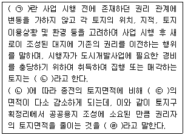
- 환지 – 입체환지 – 체비지 - 감보
- 체비지 – 환지 – 체비지 - 감보
- 환지 – 체비지 – 환지 - 감보
- 체비지 – 입체환지 – 환지 – 감보
(정답률: 78%)
13. 18~19세기에 제안된 이상도시의 계획가와 이상 도시안에 대한 설명으로 옳은 것은?
- Robert Owen: 도시 대신 단일 건물인 팔란스테르(Phalanstere)를 제안하였다.
- Buckinghan: 농업과 공업이 결합된 이상적 도시안인 이상공장촌을 제안하였다.
- Ledoux: 산업혁명을 의식하여 새로운 생산체제를 도입한 이상도시 쇼(Chaux)를 제안하였다.
- C. Fourier: 근대건축기술이나 과학적 진보를 적극적으로 도입할 필요성을 제시하면서 유리로 덮인 도시 빅토리아(Victoria)를 제안하였다.
(정답률: 78%)
14. 도시기능별 입지조건에 대한 설명으로 옳지않은 것은?
- 상업지역: 기능의 활성화를 위하여 접근성이 좋아야 한다.
- 녹지지역: 생활권과 유기적으로 공원을 연결하고 녹지축을 형성해야 한다.
- 주거지역: 지역민이 가장 오랜 시간을 보내는 곳으로 안정성과 쾌적성이 좋아야 한다.
- 공업지역: 향후 확장에 따른 환경오염 피해를 최소화하기 위하여 대상 부지가 좁아야 한다.
(정답률: 89%)
15. 우리나라 도시계획제도의 성립과 변화과정에 대한 설명으로 옳지 않은 것은?
- 근대 도시계획제도는 1934년 제정된 「조선시가지계획령」에서 비롯되었다.
- 1981년 「도시계획법」이 전면 개정되면서 20년 장기의 도시기본계획 수립을 제도화하였다.
- 1962년 「도시계획법」이 제정되면서 일제의 잔재를 청산하고 새로운 도시계획체계를 확립했다.
- 2002년 「국토의 계획 및 이용에 관한 법률」을 제정하면서 각각 다른 법률에 의하여 도시지역과 비도시지역으로 관리하도록 운영을 이원화하였다.
(정답률: 76%)
16. 용적률이 600%이고 12층인 건축물의 건폐율은?
- 80%
- 40%
- 50%
- 60%
(정답률: 88%)
17. 토지이용을 고도화하거나 특정 목적 달성을 위하여 부여한 토지용도의 취지를 개별 건축물에 구체적으로 반영하고자 하는 구역으로, 도시지역 내 지구단위계획구역을 지정할 수 있는 용도지구가 아닌 것은?
- 경관지구
- 복합용도지구
- 개발진흥지구
- 고도지구
(정답률: 39%)
18. 토지이용계획의 역할과 목적에 대한 설명으로 옳지 않은 것은?
- 공공의 이익을 위해서 토지이용의 규제와 실행수 단을 제시해 준다.
- 체계적인 계획과 도시의 발전을 도모하여 외연적 확산을 촉진시킨다.
- 자연적으로 보존해야 하는 지역에 대해서 토지이용에 대한 제한을 설정한다.
- 도시의 현재와 미래 모습을 고려하여 적절한 용도 지역을 부여하여 개발 및 관리를 추진한다.
(정답률: 89%)
19. 주민의 사교, 오락, 휴식 및 공동체 활성화 등을 위하여 근린주거구역별로 설치하고, 시·군 전반에 걸쳐 계통적으로 균형을 이루도록 하여야 하는 일반광장의 종류는?
- 중심대광장
- 교차점광장
- 경관광장
- 근린광장
(정답률: 80%)
20. 용도지역 중 상업지역에 해당되지 않는 것은?
- 전용상업지역
- 근린상업지역
- 일반상업지역
- 유통상업지역
(정답률: 69%)
2과목: 도시설계 및 단지계획
21. 캐빈 린치(Kevin Lynch)가 그의 저서 ‘도시의 이미지’에서 공공이미지를 만들어내는 5가지 요소로 정의하지 않은 것은?
- 결절점(node)
- 지구(district)
- 통로(path)
- 조경(landscape)
(정답률: 82%)
22. 상업시설용지의 배치유형을 집중형과 노선형으로 구분할 때, 집중형에 비해 노선형이 갖는 특징으로 틀린 것은?
- 자동차 위주의 접근을 유도한다.
- 단일 목적의 활동이 일어나는 것이 기대될 때 적용한다.
- 도시미관이 손상될 우려가 있다.
- 도로와 거주지 사이의 소음을 완충하는 역할을 한다.
(정답률: 52%)
23. 토지이용을 합리화하고 그 기능을 증진시키며, 경관과 미관을 개선하고, 체계적 및 계획적으로 개발관리하기 위하여 건축물 및 그 밖의 시설의 용도와 종류 및 규모, 건폐율 또는 용적률을 완화하여 수립하는 계획을 무엇이라 하는가?
- 택지개발계획
- 경관계획
- 토지이용계획
- 지구단위계획
(정답률: 64%)
24. 테라스(Terrace)형 집합주택의 특성에 대한 내용으로 틀린 것은?
- 경사진 지형을 활용하기 위한 주택의 집합방법이다.
- 우리나라에서 가장 높은 비율을 차지하고 있는 주택유형이다.
- 일광과 훌륭한 전망을 유지할 수 있다.
- 옥상의 활용을 극대화 할 수 있다.
(정답률: 77%)
25. 주거단지의 도로 설계 시 고려하여야 할 사항으로 가장 거리가 먼 것은?
- 선형(線型)
- 시거(視距)
- 종단경사
- 서비스 수준
(정답률: 72%)
26. 도보권 근린공원의 설치 및 규모 기준에 관한 내용으로 틀린 것은?
- 유치거리 기준은 2km이하 이다.
- 설치기준에 관한 제한은 없다.
- 규모는 3만m2이상을 기준으로 한다.
- 주로 도보권 안에 거주하는 자의 이용에 제공할 것을 목적으로 하는 근린공원이다.
(정답률: 68%)
27. 도시지역 내 지구단위계획구역에서 대지면적의 일부가 공공시설 부지로 제공되도록 계획되는 다음의 조건에서 완화 받을 수 있는 건폐율의 기준은?
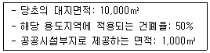
- 50%이내
- 55%이내
- 65%이내
- 70%이내
(정답률: 67%)
28. 유비쿼터스 도시(U-city)에 대한 설명으로 가장 적합한 것은?
- 인터넷에 가상으로 존재하는 도시를 통칭
- 도시 공간에 IT 기술이 융·복합되어 시민에게 다양한 서비스를 제공하는 도시
- 사용 에너지의 합과 생산 에너지의 합이 최종적으로 0이 되는 도시
- 녹지공간이 풍부하여 쾌적하고 살기 좋은 도시
(정답률: 87%)
29. 단지계획 시 고려해야 할 사항으로 가장 거리가 먼 것은?
- 건물을 등고선에 따라 배치시키는 것이 자연지형을 파괴하지 않는 가장 경제적인 방법이다.
- 위요감이 없는 외부공간은 장소성·식별성·방어감·일체감에 유리하다.
- 시대 흐름에 맞게 첨단정보통신기술이 적용된 새로운 형태의 단지계획기법이 필요하다.
- 자원·에너지절약형 설계요소 도입으로 지속가능한 발전을 추구하고자 한다.
(정답률: 73%)
30. 범죄예방환경설계(CPTED)의 기법으로 바람직하지 않은 것은?
- 주변에서 눈에 띄지 않게 외부공간을 조성한다.
- 주민들이 모여 어울릴 수 있는 장소를 조성한다.
- 도시 및 단지 내 시설물을 깨끗하고 정상적으로 유지한다.
- 건물 및 시설물과 외부공간은 서로 잘 보이도록 배치를 조성한다.
(정답률: 86%)
31. 건축한계선의 지정 목적으로 가장 적합한 것은?
- 상점가의 1층 벽면에 일정한 특성을 부여할 필요가 있는 경우에 지정할 수 있다.
- 공동주택 1층에 설치된 필로티 형태의 주차장에 차량 출입구를 확보하기 위한 것을 주요 목적으로 한다.
- 가로경관이 연속적인 형태를 유지하거나 구역 내 중요 가로변의 건축물을 가지런히 할 필요가 있는 경우에 사용한다.
- 도로에 있는 사람이 개방감을 가질 수 있도록 건축물을 도로에서 일정거리 후퇴시켜 건축하게 할 필요가 있는 곳에 지정할 수 있다.
(정답률: 69%)
32. 단지의 획지 분할에 관한 설명으로 틀린 것은?
- 모든 획지의 남북 방향으로 길어야 한다.
- 건축물의 용도에 맞게 적절한 규모가 되도록 획지 규모를 결정한다.
- 상업용지의 획지 분할은 수요자 요구에 맞게 적정하고 다양한 규모의 분할을 추구하는 것이 바람직하다.
- 획지의 규모는 가로구성, 경관조성 등에 영향을 준다.
(정답률: 83%)
33. 지구단위계획 중 관계 행정기관의 장과의 협의, 국토교통부장관과의 협의 및 중앙도시계획위원회·지방도시계획위원회 또는 공동위원회의 심의를 거치지 않고 변경할 수 있는 경우의 기준이 틀린 것은?
- 가구면적의 20% 이내의 변경인 경우
- 획지면적의 30% 이내의 변경인 경우
- 건축물높이의 20% 이내의 변경인 경우
- 건축선의 1미터 이내의 변경인 경우
(정답률: 48%)
34. 도시생활권의 위계를 소·중·대생활권으로 구분할 때, 소생활권에 알맞은 생활편의시설로 가장 거리가 먼 것은?
- 약국
- 놀이터
- 백화점
- 행정복지센터
(정답률: 85%)
35. 폐기물처리 및 재활용시설의 결정기준으로 틀린 것은?
- 폐기물처리시설은 공업지역, 녹지지역, 관리지역, 농립지역(농업진흥지역 제외), 자연환경보전지역에 설치한다.
- 풍향과 배수를 고려하여 주민의 보건위생에 위해를 끼칠 우려가 없는 지역에 설치한다.
- 용수와 동력을 확보하기 쉽고 자동차가 접근하기 편리한 지역에 설치한다.
- 매립의 방법으로 처리하는 시설은 지형상 고지대, 저수지, 평지 등에 설치한다.
(정답률: 69%)
36. 지구단위계획에 대한 도시·군관리계획 결정도의 표시기호가 옳은 것은?
- 공동개발
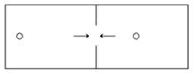
- 차량진출입구
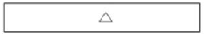
- 건축한계선
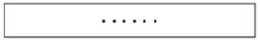
- 공공보행통로
(정답률: 74%)
37. 근린생활권의 위계가 옳은 것은?
- 근린주구 ＞ 근린분구 ＞ 인보구
- 근린분구 ＞ 근린주구 ＞ 인보구
- 인보구 ＞ 근린분구 ＞ 근린주구
- 근린분구 ＞ 인보구 ＞ 근린주구
(정답률: 80%)
38. 보행자우선도로의 결정기준으로 틀린 것은?
- 보행자의 안전을 위하여 경사가 심한 곳에는 설치하지 아니한다.
- 안전하고 쾌적한 보행을 위하여 보행자전용도로 및 녹지체계 등과 최단거리로 연결되도록 한다.
- 도시지역 내 간선도로의 이면도로로서 차량통행과 보행자의 통행을 구분하기 어려운 지역 중 보행자의 통행이 많은 지역에 설치한다.
- 차량속도, 차량통행량 및 보행자의 통행량을 고려한 사전검토계획을 통해 차량속도는 시속 40km 이하로 계획한다.
(정답률: 67%)
39. 경관 분석의 방법에 해당하지 않는 것은?
- 기호화 방법
- 게슈탈트(Gestalt)에 의한 방법
- 시각회랑(Visual Corridor)에 의한 방법
- 그린 매트릭스(Green Matrix)에 의한 방법
(정답률: 54%)
40. 주택건설기준 등에 관한 규정상 방음시설을 설치하여야 하는 공동주택을 건설하는 지점의 소음도(실외소음도) 기준은?
- 75dB 이상
- 65dB 이상
- 55dB 이상
- 45dB 이상
(정답률: 84%)
3과목: 도시개발론
41. 우리나라 도시개발의 흐름에서 제조업과 관광업 등 산업입지와 경제활동을 위해 민간기업 주도로 개발된 도시로, 산업·연구와 주택·교육·의료·문화 등 자족적 복합기능을 가진 도시조성을 위해 개발된 도시는?
- 행정중심복합도시
- 기업도시
- 뉴타운
- 혁신도시
(정답률: 69%)
42. 다음 중 토지의 취득방식에 따른 도시개발 사업의 유형에 해당하지 않는 것은?
- 혼용방식
- 제3섹터개발방식
- 환지방식
- 수용 또는 사용방식
(정답률: 78%)
43. 다음 중 개발권양도제(TDR)에 대한 설명으로 틀린 것은?
- 토지소유자의 개발 제한에 대한 보상을 하므로 높은 공정성을 확보할 수 있다.
- 보상가격산정에 있어 시장기구를 활용할 수 없다.
- 자원배분의 왜곡을 어느 정도 방지할 수 있다.
- 보상비용이 과다할 수 있으며, 제도의 시행에 많은 준비와 기획이 요구된다.
(정답률: 66%)
44. 도시 및 주거환경정비법에 다른 정비구역의 지정권자는 정비구역 등을 해제하여야 하는 경우에도 불구하고, 정비사업의 추진 상황으로 보아 주거환경의 계획적 정비 등을 위하여 정비구역 등의 존치가 필요하다고 인정하는 경우, 관련 규정에 따른 해당 기간을 최대 몇년의 범위에서 연장하여 정비구역 등을 해제하지 아니할 수 있는가?
- 1년
- 2년
- 3년
- 5년
(정답률: 37%)
45. 다음 중 역세권에 대한 설명으로 틀린 것은?
- 좁은 의미로 역사로부터 타 교통수단에 의존하지 않고 도보로 도달할 수 있는 지역을 뜻한다.
- 역사를 중심으로 작은 지역을 이룰 수 있는 공간으로, 도시민들에게 서비스나 편의를 제공한다.
- 최근에는 역을 중심으로 한 복합적 토지이용을 지양하고 수송의 역할에 충실한 역세권을 개발하려고 한다.
- 기차의 정착에 따라 종착역세권, 환승역세권, 통과 역세권으로 나누어 볼 수 있다.
(정답률: 76%)
46. 미래의 불확실성에 대응하기 위한 분석 방법인 시나리오 분석에 대한 설명으로 틀린 것은?
- 장래에 일어날 수 있는 일이 어떠한 영향을 미치게 되는가를 시나리오적인 문장으로 표현한다.
- 보통 현상연장형 낙관적 시나리오, 비관적 시나리오의 3가지 종류를 준비한다.
- 전문가에게 각 시나리오 중 어느 것이 실현된 것인가를 평가받거나 또는 각각의 시나리오의 발생활률을 평가받는다.
- 연속된 의사결정이 도식적으로 표현되어 이해가 쉽고, 각 시나리오별 대안의 기댓값 산출이 가능하다.
(정답률: 61%)
47. 도시 및 주거환경비법에서 규정하고 있는 “정비사업”의 종류가 아닌 것은?
- 재건축사업
- 재개발사업
- 주거환경개선사업
- 도시환경정비사업
(정답률: 74%)
48. 다음 조건에 따른 상업용지의 수요 면적은?
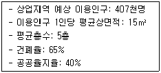
- 0.75km2
- 1.13km2
- 3.13km2
- 5.81km2
(정답률: 70%)
49. 프로젝트 파이낸싱과 관련한 아래 설명에서 ‘㉠’에 해당하는 것은?
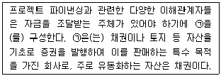
- Special Corporation
- Special Purpose Corporation
- Project Financing Corporation
- Project Management Company
(정답률: 70%)
50. 도시기능의 회복이 필요하거나 주거환경이 불량한 지역을 계획적으로 정비하고 노후·불량건축물을 효율적으로개량하기 위하여 필요한 사항을 규정한 것은?
- 건축법
- 도시개발법
- 도시 및 주거환경정비법
- 국토의 계획 및 이용에 관한 법률
(정답률: 80%)
51. 수요예측을 위한 시계열분석법 중 다른 기법과 비교하여 이동평균법이 갖는 특징에 대한 설명으로 틀린 것은?
- 단기 분석에 사용한다.
- 규모가 작은 신제품의 시장 예측에 사용한다.
- 배우기 쉬우나 결과 해석이 어렵다.
- 이용 비용이 매우 적다.
(정답률: 63%)
52. 수요 예측의 정성적 예측모형으로 조사하고자 하는 특정사항에 대한 전문가 집단을 대상으로반복 앙케이트를 시행하여 의견을 조사하는 방법은?
- 델파이 방법
- 판단결정모델
- 로짓 모형
- 허프(Huff) 모형
(정답률: 78%)
53. 다음 중 제3섹터의 특징이 아닌 것은?
- 단기간 내의 채산성 확보가 어려움
- 주민의 적극적인 자원봉사를 전제로 함
- 불안정성과 실패에 대한 책임소재가 불분명함
- 공공의 안정성, 계획성과 민간의 효율성을 결합함으로써 합리적 사업 추진 가능
(정답률: 70%)
54. 다음 중 지속가능한 토지이용계획을 위한 전략으로 가장 거리가 먼 것은?
- 대중교통지향적인 도시개발(Transit-oriented Urban Development)
- 혼합적 토지이용(Mixed Land-use Development)
- 직주근접개발(Job-Housing Balanced Development)
- 도시확산개발(Urban Decentralization Development)
(정답률: 81%)
55. 마케팅 활동에서 사용하는 여러 가지 전략을 종합적으로 균형이 잡히도록 조정·구성하는 마케팅믹스(4P’s Mix)의 4P로 옳은 것은?
- Property, Price, Place, Pride
- Property, Price, Purpose, Pride
- Product, Price, Place, Promotion
- Product, Price, Purpose, Promotion
(정답률: 74%)
56. 1960년대 이후 미국의 계획단위개발(PUD)의 본격적 시행을 통하여 도출된 문제점과 가장 거리가 먼 것은?
- 평범한 고밀도단지를 형성할 우려가 있다.
- 고용기회를 갖추지 못한 채 대량의 인구를 입주시킬 우려가 있다.
- 사도(Private street), 공동 오픈스페이스 등의 유지 관리 비용이 많이 든다.
- 승인 과정 상 지방자치단체의 개발 관리 능력이 현저히 저할될 우려가 있다.
(정답률: 59%)
57. 시간대별 비용과 수입이 추정되었을 때 프로젝트의 사업성 평가에 일반적으로 사용하는 지표로 적합하지 않은 것은?
- 순현재가치(FNPV)
- 내부수익률(FIRR)
- 이전비용(Transfer Payment)
- 수익성지수(PI)
(정답률: 79%)
58. 도시개발법상 아래 설명에 ㉢에 들어갈 내용으로 옳은 것은?
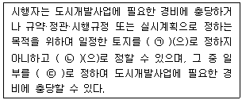
- 체비지
- 환지
- 보류지
- 국유지
(정답률: 74%)
59. 다음 중 도시계획의 성격이 가장 다른 하나는?
- 라이트와 스타인의 래드번(Redbum) 계획
- 아베크롬비의 대런던계획(Greater London Plan)
- 안드레 듀아니의 시사이드(Seaside) 계획
- 밀루틴(N,A, Miliutin)의 스탈린그라드 계획
(정답률: 40%)
60. 마케팅을 활성화하기 위한 경영활동의 계획에서 반드시 수반되어야 하는 마케팅전략(STP)의 세 단계는?
- Stimulating, Tightening, Positioning
- Stimulating, Tightening, Pursuing
- Standardization, Targeting, Pursuing
- Segmentation, Targeting, Positioning
(정답률: 63%)
4과목: 국토 및 지역계획
61. 수도권정비계획법에 따른 권역의 구분에 해당하지 않는 것은?
- 자연보전권역
- 과밀억제권역
- 성장관리권역
- 개발유보권역
(정답률: 66%)
62. 베버(A. Weber)의 최소비용 산업입지이론에서 최적 입지를 결정하는 생산비용 결정 요소에 해당하지 않는 것은?
- 노동비
- 수송비
- 집정경제
- 토지비용
(정답률: 62%)
63. 테네시계곡 개발계획(TVA 계획)은 어느 나라의 지역 계획인가?
- 독일
- 미국
- 영국
- 프랑스
(정답률: 80%)
64. 고전적인 변이할당분석법(Shift-share Analysis)에 관한 설명으로 틀린 것은?
- 도시성장의 원인이 산업성장에 있으며 성장은 산업 자체의 구성변화를 가져온다는 점을 중요시 한다.
- 지역 내 산업 간 연관관계를 반영하지 못하는 단점이 있다.
- 지역성장을 횡적, 종적 차원에서 동시에 분석할 수 있고 분석결과를 이해하기가 쉽다.
- 지역의 경쟁요인이 시간이 지남에 따라 변한다고 가정한다.
(정답률: 47%)
65. 지역계획 입안 과정에서 주민이 참여함으로서 나타나는 효과로 가장 기대하기 어려운 것은?
- 주민의사의 계획 반영
- 주민의 지역계획 관심 증대
- 주민 상호 간의 이해 대립의 해소
- 주민의 자발적 협조에 의한 집행의 용이
(정답률: 69%)
66. 균형발전이론 중 1975년에 등장한 도농접근(agropolitan approach)법에 대한 설명으로 틀린 것은?
- 적극적인 외부의 원조를 받아 균형발전을 도모하고 주민 참여는 제한한다.
- 생산의 다양화, 자원의 공영제, 기회의 균등을 중시한다.
- 주민은 스스로 기본적 생활수준을 유지하고 자립을 이루기 위하여 선별적으로 적정 수준의 지역범위를 결정한다.
- 다른 지역과의 자유무역을 억제하고 비교우위의 원칙이나 다국적 기업의 이념을 제한한다.
(정답률: 59%)
67. A도시와 B도시가 있다. 컨버스의 수정소매인력 이론을 이용하여 A도시로부터 분기점까지의 거리를 구하면 얼마인가? (단, A도시의 인구는 100,000명, B도시의 인구는 900,000명 이고, A도시와 B도시 간 거리는 200km이다.)
- 30km
- 50km
- 75km
- 100km
(정답률: 53%)
68. 다음 중 지역계획의 수립 시 가장 우선적으로 고려하여야 하는 계획지표는?
- 고용창출율
- 교육기관 입지율
- 인구
- 재정상태
(정답률: 82%)
69. 기업의 지방 입지 유도를 위해 지원하는 내용으로 가장 거리가 먼 것은?
- 과밀 부담금, 증과세 부과
- 제정·금융 지원의 확대, 토지이용규제 완화
- 도로, 항만, 용수, 전력, 통신 등 기반 시설 지원
- 소요 인력의 자체 육성을 위한 교육기관 설립권 우선 부여
(정답률: 76%)
70. 지역계획의 발전에 기여한 학자와 주요 내용의 연결이 옳은 것은?
- 튀넨 - 지대론
- 페로우 - 산업클러스터론
- 뢰쉬 – 상호의존적 입지론
- 크리스탈러 – 수출기반이론
(정답률: 73%)
71. 지프(Zipf)의 순위규모법칙에 따라 수위도시의 인구가 1,000만명일 때, 2위 도시의 인구는 몇 명인가? (단, q=1이다.)
- 500만명
- 250만명
- 100만명
- 50만명
(정답률: 72%)
72. 쇄신의 전염적 확산을 통계적 시뮬레이션 모델로 발전시킨 학자는?
- 레벤스타인
- 베리
- 헤거스트란트
- 미르달
(정답률: 32%)
73. 통일이 된 이후의 국토공간구조를 구성함에 있어서 기본방향이 되기 어려운 것은?
- 국토의 일체성을 회복하고자 노력한다.
- 단기간 내에 남·북의 국토공간구조를 동일화 하는 전략을 우선 추진한다.
- 국토의 미래상을 설정하고 장기종합계획을 수립한다.
- 외부에 대해 능동적이고 진취적인 구조로 개편한다.
(정답률: 75%)
74. 다음 중 국토기본법상 국토종합계획에 포함되어야 하는 내용이 아닌 것은? (단, 부수되는 사항은 고려하지 않는다.)
- 국토의 현황 및 여건 변화 전망에 관한 사항
- 지하 공간의 합리적 이용 및 관리에 관한 사항
- 주택, 상하수도 등 생활 여건의 조성 및 삶의 질 개선에 관한 사항
- 재정확충 및 도시·군기본계획의 시행을 위하여 필요한 재원조달에 관한 사항
(정답률: 55%)
75. 지역경제의 성장 잠재력과 삶의 질 차원의 지역격차 분석을 위해 이용하는 변수로 가장 거리가 먼 것은?
- 취업률
- 소득
- 1일 평균 강수량
- 생활환경 지표
(정답률: 78%)
76. 입지상법(Location Quotient)에 따른 입지상계수의 계산 방법이 옳은 것은?
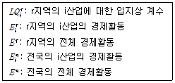
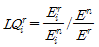
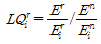
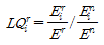
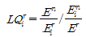
(정답률: 64%)
77. 성장극(Growth Pole)의 특성이 아닌 것은?
- 성장을 유도하고 그 성장을 다른 곳으로 확산시킨다.
- 성장을 촉진시키는 쇄신, 새로운 아이디어를 받아 들이는 성향을 갖는다.
- 다른 산업보다 빠르게 성장한다.
- 다른 산업과의 연계성(Linkage)을 갖지는 않는다.
(정답률: 82%)
78. 국토계획, 지역계획, 도시계획으로 구분하는 기준으로 옳은 것은?
- 시간적 차이
- 공간적 범위
- 토지 이용 상태
- 경제적 수준
(정답률: 81%)
79. 제3차 국토종합개발계획(1992~2001)의 기본 목표에 해당하는 것은?
- 세계회에 대비한 국토공간 조성
- 지방분산형 국토골격의 형성
- 인구의 지방정착 유도
- 사회간접자본 확충
(정답률: 49%)
80. 다음 각 학자들과 그들이 주장한 지역 구분이 바르게 짝지어진 것은?
- Boudeville: 번성·발전도상저개발·잠재적 저개발·저개발지역
- Herbertson: 지리적·경제·사회문화지역
- Hihorst: 과밀·중간·낙후지역
- Hansen: 대도시·중소도시·농촌지역
(정답률: 47%)
5과목: 도시계획관계법규
81. 주차장법규상 노외주차장에 설치할 수 있는 부대시설에 해당하지 않는 것은? (단, 시·군 또는 자치구의 조례로 정하는 이용자 편의시설은 고려하지 않는다.)
- 관리사무소
- 공중화장실
- 자동차 관련 수리시설
- 노외주차장의 관리·운영상 필요한 편의시설
(정답률: 76%)
82. 건축법상 허가권자가 가로구역별로 건축물의 높이를 지정·공고할 때 고려하지 않아도 되는 사항은?
- 도시·군관리계획 등의 토지이용계획
- 해당 가로구역이 접하는 도로의 길이
- 도시미관 및 경관계획
- 해당 가로구역의 상·하수도 등 간선시설의 수용 능력
(정답률: 51%)
83. 다음 중 재정비촉진지구의 유형에 해당하지 않는 것은?
- 주거지형
- 중심지형
- 고밀복합형
- 연계개발형
(정답률: 54%)
84. 수도권정비실무위원회의 위원장은?
- 국무총리
- 국토교통부장관
- 국토교통부 제1차관
- 서울특별시 2급 공무원
(정답률: 47%)
85. 도시개발법상 조합 설립의 인가를 신청하기 위한 동의 기준이 옳은 것은?
- 해당 도시개발구역의 토지면적의 1/2 이상에 해당하는 토지 소유자와 그 구역의 토지 소유자 총 수의 1/3 이상의 동의
- 해당 도시개발구역의 토지면적의 1/2 이상에 해당하는 토지 소유자와 그 구역의 토지 소유자 총 수의 1/2 이상의 동의
- 해당 도시개발구역의 토지면적의 1/2 이상에 해당하는 토지 소유자와 그 구역의 토지 소유자 총 수의 2/3 이상의 동의
- 해당 도시개발구역의 토지면적의 2/3 이상에 해당하는 토지 소유자와 그 구역의 토지 소유자 총 수의 1/2 이상의 동의
(정답률: 74%)
86. 주차장법령상 건축물의 연면적 중 주차장으로 사용되는 부분의 비율이 얼마 이상인 경우를 주차전용건축물이라고 하는가?
- 80%
- 85%
- 90%
- 95%
(정답률: 46%)
87. 다음 중 산업단지개발사업의 시행자가 될 수 없는 자는?
- 「중소기업진흥에 관한 법률」에 따른 중소기업진흥공단
- 「한국농어촌공사 및 농지관리기금법」에 따른 한국농어촌공사
- 해당 산업단지개발계획에 적합한 시설을 설치하여 입주하려는 자와 산업단지개발에 관한 자문계약을 체결한 부동산투자자문회사
- 「산업집적활성화 및 공장설립에 관한 법률」의 규정에 따라 설립된 한국산업단지공단
(정답률: 67%)
88. 도시재생을 촉진하기 위하여 산업·상업·주거·복지·행정 등의 기능이 집적된 지역 거점을 우선적으로 조성할 필요가 있는 지역에 대하여 지정·고시되는 지구는?
- 도시재생활성화지구
- 도시재생혁신지구
- 도시재생선도지구
- 특별재생지구
(정답률: 39%)
89. 다음 중 주택법에 따른 용어에 대한 설명으로 틀린 것은?
- 국가·지방자치단체의 재정 또는 주택도시기금으로부터 자금을 지원받아 건설되거나 개량되는 주택으로 국민주택규모 이하인 주택을 국민주택이라 한다.
- 수도권을 제외한 도시지역이 아닌 읍 또는 면 지역은 1호 또는 1세대당 주거전용면적이 85m2이하인 주택을 국민주택규모라 한다.
- 주택조합은 지역주택조합, 직장주택조합, 리모델링주택조합으로 구분된다.
- 도시형 생활주택이란 300세대 미만의 국민주택 규모에 해당하는 주택으로서 대통령령으로 정하는 주택을 말한다.
(정답률: 46%)
90. 계획관리지역·생산관리지역 및 대통령령으로 정하는 녹지지역에서 성장관리방안을 수립한 경우 대통령령으로 정하는 건폐율 완화기준으로 틀린 것은?
- 계획관리지역: 50% 이하
- 자연녹지지역: 30% 이하
- 생산관리지역: 30% 이하
- 보전녹지지역: 20% 이하
(정답률: 50%)
91. 쾌적하고 살지 좋은 주거환경 조성에 필요한 주택의 건설·공급 및 주택시장의 관리 등에 관한 사항을 정함으로써 국민의 주거안정과 주거수준의 향상에 이바지함을 목적으로 하는 것은?
- 주택법
- 택지개발촉진법
- 자연재해대책법
- 도시 및 주거환경정비법
(정답률: 55%)
92. 과밀부담금에 대한 설명으로 틀린 것은?
- 과밀부담금은 부과 대상 건축물의 신축·증축시 부과한다.
- 공공 청사 신축의 경우, 과밀부담금 기초공제면적은 5천m2이다.
- 과밀부담금 관련 건축비는 국토교통부장관이 고시하는 표준건축비를 기준으로 한다.
- 과밀부담금은 부과 대상 건축물이 속한 지역을 관할하는 시·도지사가 부과·징수한다.
(정답률: 58%)
93. 막다른 도로의 길이가 35m이상인 경우, 그 도로의 너비가 최소 얼마 이상이면 건축법령상 도로로 정의되는가? (단, 특별자치시장·특별자치도지사 또는 시장·군수·구청장이 지형적 조건으로 인하여 차량 통행을 위한 도로의 설치가 곤란하다고 인정하여 그 위치를 지정·공고하는 구간 및 도시지역이 아닌 읍·면지역 도로의 경우는 제외한다.)
- 2m
- 3m
- 6m
- 10m
(정답률: 61%)
94. 「국토의 계획 및 이용에 관한 법률」상 도시·군계획시설 사업의 시행자가 도시·군계획시설 사업에 관한 조사를 위해 타인의 토지에 출입하고자 할 때, 출입하고자 하는 날의 며칠전까지 그 토지의 소유자·점유자 또는 관리인에게 그 일시와 장소를 알려야 하는가? (단, 도시계획시설사업의 시행자가 행정청인 경우는 제외한다.)
- 14일
- 7일
- 5일
- 3일
(정답률: 53%)
95. 주차장의 주차단위구획 기준에 따라 장애인전용 주차 구획의 최소 면적은? (단, 평행주차형식 외의 경우다.)
- 7.2m2
- 12.5m2
- 16.5m2
- 18.15m2
(정답률: 68%)
96. 국토정책위원회에 관한 내용으로 틀린 것은?
- 국토계획 및 정책에 관한 중요 사항을 심의하기 위하여 국무총리 소속으로 둔다.
- 국토종합계획, 도종합계획, 지역계획에 관한 사항을 심의한다.
- 위원장은 국토교통부장관이다.
- 업무를 효율적으로 수행하기 위하여 대통령령으로 정하는 바에 따라 분야별로 분과위원회를 둔다.
(정답률: 57%)
97. 국토기본법상 다른 법률에서 다른 위원회의 심의를 거치도록 한 경우 국토정책위원회의 심의를 거치지 아니하는 사항은?
- 부문별계획에 관한 사항
- 도종합계획에 관한 사항
- 국토계획평가에 관한 사항
- 국토종합계획에 관한 사항
(정답률: 47%)
98. 도시 및 주거환경정비법상 임대주택 및 주택규모별 건설비율에 대한 아래 내용에서 ㉠과㉡에 들어갈 내용이 모두 옳은 것은?
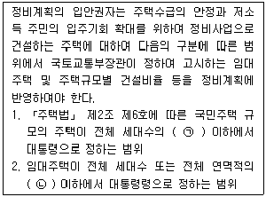
- ㉠ 100분의 90, ㉡ 100분의 50
- ㉠ 100분의 50, ㉡ 100분의 30
- ㉠ 100분의 90, ㉡ 100분의 30
- ㉠ 100분의 50, ㉡ 100분의 20
(정답률: 56%)
99. 「도시개발법」에 의한 개발계획의 규모가 100만m2이상인 경우 도시공원 또는 녹지의 확보기준으로 옳은 것은?
- 상주인구 1인당 3m2 이상 또는 개발 부지 면적의 5% 이상 큰 면적
- 상주인구 1인당 5m2 이상 또는 개발 부지 면적의 7% 이상 중 큰 면적
- 상주인구 1인당 7m2 이상 또는 개발 부지 면적의 10% 이상 중 큰 면적
- 상주인구 1인당 9m2 이상 또는 개발 부지 면적의 12% 이상 중 큰 면적
(정답률: 47%)
100. 국토교통부장관이 개발제한구역을 조정하거나 해제할 수 있는 경우에 대한 기준이 아닌 것은?
- 개발제한구역에 대한 환경평가 결과 보존가치가 낮게 나타나는 곳으로서 도시용지의 적절한 공급을 위하여 필요한 지역
- 도로(국토교통부장관이 정하는 규모란 도로만 해당)철도 또는 하천 개수로로 인하여 단절된 3천 제곱미터 미만의 토지
- 주민이 집단적으로 거주하는 취락으로서 주거환경 개선 및 취락 정비가 필요한 지역
- 도시의 균형적 성장을 위하여 기반시설의 설치 및 시가화 면적의 조정 등 토지이용의 합리화를 위하여 필요한 지역
(정답률: 53%)